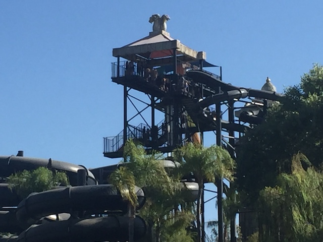
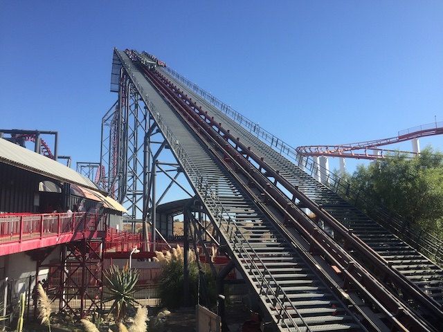
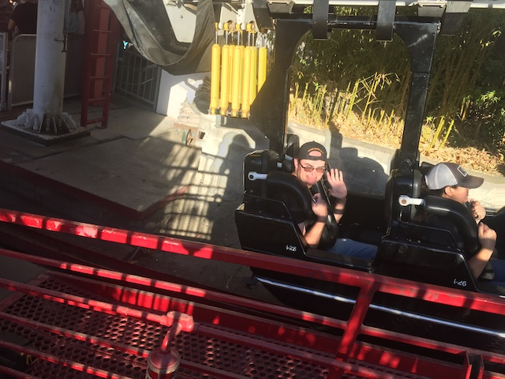
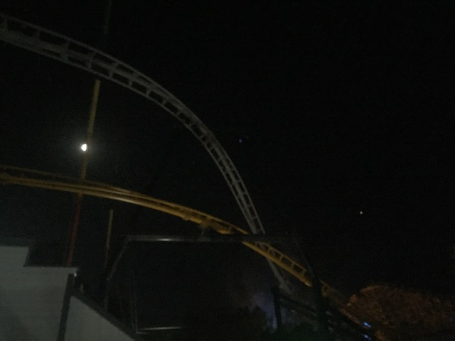

| |
Fall 2019 Photos
Dark Harbor & Fright Fest Knotts Scary Farm
All right. Time for another Incrediblecoasters Halloween Update. I know big Halloween updates used to be a big staple, but then they stopped thanks to Financial Lockdown. Well, we started them up again in 2017. 2018, we had to cut all the Halloween stuff since...we left for Japan at the end of the 3rd week of October, and the other half of the month where I wasn't in Japan, I was busy working a lot of hours, and pumping out a ton of Incrediblecoasters updates I wanted finished before Japan. So there wasn't really a Halloween Season last year (but that's totally OK considering what I did instead). So then we decided...we're gonna go all in on Halloween this year. We did Knotts Scary Farm, Fright Fest, and Queen Mary's Dark Harbor. We did several times in the past, but always left it out of the update since it's not a theme park. Well....F*CK IT!!! It deserves some love and recognition on Incrediblecoasters, so we decided to throw it in the update this year.
Fun little fact. I wasn't even planning on doing Dark Harbor this night. The original plan was do it some other day later on towards Halloween. I was just at the Queen Mary with Jason cause...we were bored in Long Beach and it's a place to walk around. Well...while here, who should I bump into other than Evan, Andrew, and Brittney, who were here to hang out and then do Dark Harbor later that night since this is when Andrew was in SoCal. So....uh....SURPRISE DARK HARBOR VISIT!!! YAY!!! =)
Fun fact. That toilet just dumps everything right into the ocean.
Jason! Give that back! They need that so that they can make The Lego Titanic!
Though seriously. That is a really cool lego model of the ship.
Hmm. Lego Horror Maze? That's actually not a bad idea.
Love the view you get of Long Beach from the Queen Mary.
♬Near. Far. Wherever you are. I believe that Halloween goes on.♬
You may not climb. You are not the king of the world. >=(
Oh look. They have a couple flat rides to enjoy at Dark Harbor. Nothing special, but...hey. Chairswings are fun.
All right. The exploring of Queen Mary is done. Time for the main event of the night.
Yep. That's right! Time for us to do Dark Harbor this year!
Welcome to Dark Harbor mere mortals *evil laugh*
How many of you jackasses have a fear of clowns!? *honk*
Crap. I just remembered why I intially was planning on doing this on a weekday night instead of a Saturday night.
First maze of the night is Intriped. This maze is about a young sailor who basically sells his soul for his ship, and you see him in hell paying for his precious Queen Mary. Pretty good maze.
Just a quick reminder of which Halloween event we're at tonight.
Scarecrows are scary. Who knew.
"Step any closer buddy and I just may have to break your other arm *laugh*"
Next maze is Lullaby. This maze is about a little girl who drowned when the Queen Mary sunk. Now she wants someone to play with. *evil laugh* Fun maze.
Yeah. There's a giant line for every single maze here. *Sigh*
I got us some brains! =) Don't you dare spoil my fun and say it's just cotton candy! >=(
Next maze is Circus. Come see all the freak shows and horrors of the circus! Yeah. Another good maze.
New for Dark Harbor this year is Rouge. The ship is hitting a rouge wave, and now it's sinking. Really good maze. They did a good job with fog effects in making it seem like the ship is sinking.
Ooh. Like the big building they're using for the maze.
Hmm. Should we wait in a 15 minute line for a flat ride that is located at one of my home parks and almost never has a line and I almost never ride? Such a tough choice.
Unfortunately, we did not do B340 as....these lines are just too long. So we just cut it early and left. Oh well, did it in past years (Very cool crime themed maze). Dark Harbor is a great event and I'm happy I came back and finally was able to feature the event on Incrediblecoasters.

All right. Now we're at....Is Six Flags Hurricane Harbor open!!? IN OCTOBER!!!?
But seriously. We are at Six Flags Magic Mountain for Fright Fest (as well as to ride a couple roller coasters).
How much longer until that Green Lantern memorial becomes a West Coast Racers Memorial?
Yeah. The clientele for Fright Fest can be pretty scary. ;)

Yeah. It's about time we rode ourselves a roller coaster in this update. A bat-sh*t crazy one is prefered.
SWEET!!! That's the kind of line I love seeing for X2!
Marathon time!
Well, time for us to get our Fright Fest pass.
 Psst. Hey Six Flags. Normally, when people are taking construction photos of a new coaster at Halloween Time, the coaster is usually intended to open the following year. Not the year of the Halloween. Hint hint. =P
Psst. Hey Six Flags. Normally, when people are taking construction photos of a new coaster at Halloween Time, the coaster is usually intended to open the following year. Not the year of the Halloween. Hint hint. =P
 You know, it's been too long. We need to give Ninja some love.
You know, it's been too long. We need to give Ninja some love.

Hey Kings Island fanboys! Better get a lot of rides on Bat before their coaster genocide comes for it next. >=)
Any random flavor can be scary if you just dye it black.
Oh look! Lex Luthor got stuck.
Love the steampunk wheel turned spider.
 Yeah. With crowds this light, we've got a lot of rides on Twisted Collosus to take.
Yeah. With crowds this light, we've got a lot of rides on Twisted Collosus to take.
Fright Fest has officially begun. First maze, Vault 666 Unlocked.
This maze basically is themed to a house of antiques. That's possesed, Yeah. I wasn't a fan of this one.
Next maze, Red's Revenge. This one is supposedly Red Riding Hood taking revenge on everyone who allowed her grandma to get eaten by the wolf. Stupid idea, but...I still enjoyed it. Though....compared to all the mazes at Dark Harbor and Scary Farm, yeah. This sucked.
YAY!!! FULL THROTTLE GOT ZIPPERED POUCHES!!! Thank you Six Flags. That makes me so happy. =)
All right. Time for Fright Fest to really get going.
So then we did Willoughby's Mansion. A classic. Though apparently, this is the last year for it. Bummer, but not too surprising considering how long its lasted.
So I'm not sure why, but Aftermath this year for some reason seemed so much better. To the point that it was the best maze at Fright Fest.
This maze actually kind of startled me. You see...they have the water effect. Except....you're walking on some sort of balance beam over it. And....I think you have to jump off it into the "water". To the point where I jumped like I was cliff jumping, but...it's a 2 ft drop. So...it just startled me. Kind of like going over that phantom step. Good job on a much improved Aftermath Six Flags.
So this is what Six Flags thinks is scary. F*cking sunflowers. Noted.
Got Nightmares? >=)
Ooh! They finally opened up the wall leading to the back of the park!

Looking foreward to riding this.
(I know this update is super late because...life is super busy and pumping out all these updates in a pain in the ass thanks to adult responsiblities. I've ridden West Coast Racers many times, and a West Coast Racers Update is on the way. Wanna save most of my commentary for that, but...I'll just say this. It's a fun ride. Well....at least thanks to the current apocalypse, these updates are gonna be coming at a much faster pace. So...look for that update soon)
 Well, Apocalypse is finally opened back up. =)
Well, Apocalypse is finally opened back up. =)
This time, they finally got it smooth. Glad that they really did a good job smoothing it out while they were working on West Coast Racers.
So after Sewer of Souls (Decent maze. Far from the best, but I had fun), it just dumped you out into the path, which...you can't see a damn thing. The whole thing is just covered in that fog.
And while leaving Fright Fest, they were handing out Jelly Belly samples. Happy about that. =)
Knotts Scary Farm
Home
|